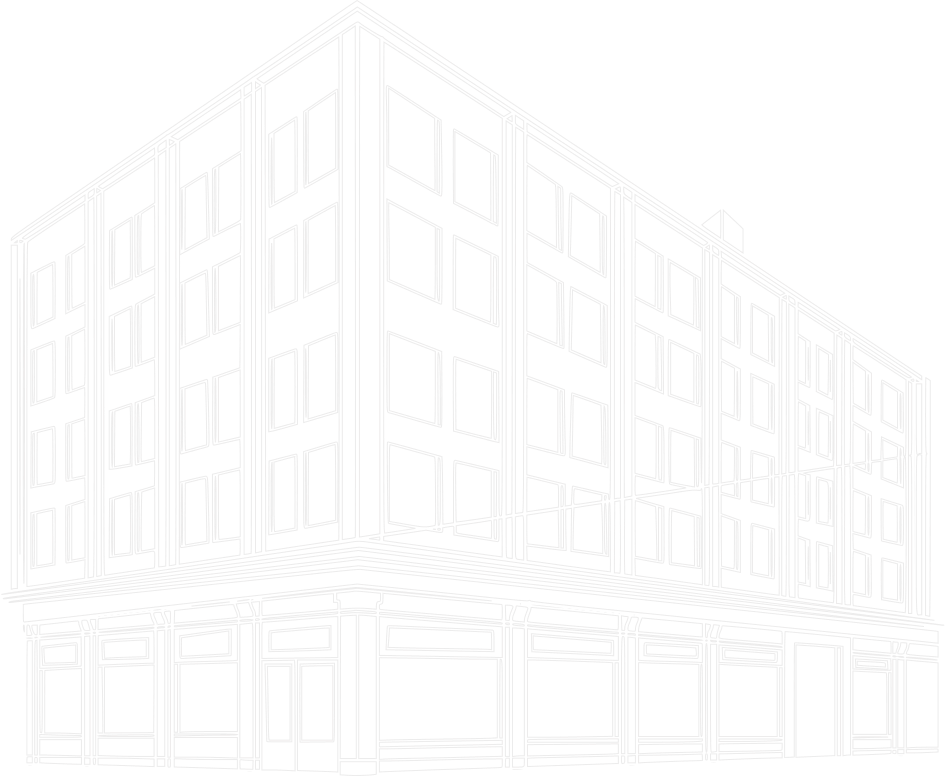

Фасадные системы для жилых комплексов и коммерческих объектов
R-VENT — фасадное направление строительного холдинга с опытом более 12 лет. Выполняем вентилируемые фасады и комплексные фасадные решения для жилых, коммерческих и общественных зданий.

/3486м3
Общая площадь фасадных работ компании Р-Вент
[О компании. Работаем с 2002 года]
Р-Вент — фасадное направление строительного холдинга с опытом более 12 лет. Выполняем вентилируемые фасады для жилых комплексов, коммерческих и общественных зданий, объединяя инженерный подход, контроль качества и практический опыт


Наша команда использует опыт, накопленный в общестроительных работах, и применяет его в фасадном направлении: от анализа проектных решений до организации монтажных работ на объекте. Мы работаем с жилыми комплексами, коммерческими зданиями и объектами, где важны не только цена, но и качество исполнения, сроки, внешний вид фасада и ответственность подрядчика после завершения работ.
Одно из наших преимуществ — возможность закрывать фасадный контур комплексно. Мы можем выполнять вентилируемые фасады, мокрые фасады, прорабатывать узлы примыкания между разными системами, а также участвовать в выполнении витражей, ограждений и смежных строительных работ через ресурсы холдинга.

Компания «Р-Вент» за 12 лет работы реализовала десятки проектов по монтажу вентилируемых фасадов — от жилых комплексов до коммерческих и общественных зданий. Ниже — несколько показательных кейсов, демонстрирующих наш опыт и компетенции
[Наши работы. Кейсы.]
апартаменты «пионерск»
01
[Наши объекты]
АПАРТАМЕНТЫ «ПИОНЕРСК»
Фасадные работы в апартаментах «Пионерск» выполнялись комплексно с соблюдением всех технологических норм и требований проектной документации. На начальном этапе специалисты провели тщательное обследование несущих стен: оценили их состояние, выявили и зафиксировали возможные дефекты — трещины, отслоения, высолы.
Подробнее об кейсе
гостиница «зеленоградск»
02
[Наши объекты]
гостиница «зеленоградск»
Фасадные работы в гостинице «Зеленоградск» выполнены комплексно с соблюдением строительных норм и проектной документации. Сначала специалисты обследовали несущие стены, выявили и зафиксировали дефекты, выполнили геодезическую съёмку для определения отклонений плоскостей. Поверхность стен очистили от загрязнений и старой отделки, локальные дефекты заделали ремонтными составами, при необходимости провели грунтование.
Подробнее об кейсе
жилой комплекс «На подлесной»
03
[Наши объекты]
жилой комплекс «На подлесной»
Фасадные работы вжилом комплексе «На Подлесной» в г. Зеленоградск выполнены в соответствии с проектной документацией и действующими строительными нормами. На начальном этапе провели детальное обследование несущих конструкций здания, выявили и задокументировали имеющиеся дефекты. Выполнили геодезическую съёмку для точной разметки монтажа. Поверхность стен очистили от загрязнений и старой отделки, локальные повреждения устранили с помощью специализированных ремонтных составов, при необходимости нанесли грунтовочный слой.
Подробнее об кейсе
[Чем мы занимаемся? Направления работы.]
работаем с заказчиком не как случайная бригада, а как организованная фасадная компания. выполняем не только отдельный участок по вентилируемому фасаду, но и берем на себя более широкий комплекс работ по наружному контуру здания
Наша специализация — фасадные системы и наружный контур здания. Мы не просто выполняем отдельные виды работ, а обеспечиваем комплексное решение задач по обустройству фасадов.
Наша главная цель — не разовая сделка, а долгосрочная репутация надёжного партнёра. Мы нацелены на выстраивание прочных отношений с заказчиками и подтверждение своего профессионализма в каждом реализованном проекте.

Вентилируемые фасады
Монтаж фасадных систем с подсистемой, утеплителем, облицовочными материалами, доборными элементами и узлами примыкания

Мокрый фасад
Устройство фасадов с применением штукатурных систем, утепления, армирующих слоёв и декоративных покрытий.

Комбинированные фасады
Проработка и выполнение узлов соединения вентилируемого фасада, мокрого фасада, откосов, парапетов и других элементов наружного контура здания.

Натуральный и искусственный камень
Работа с тяжёлыми облицовочными материалами при наличии соответствующих проектных решений.

Витражное остекление
Проектирование и монтаж светопрозрачных конструкций любой сложности

Ограждающие конструкции
Монтаж или координация работ по ограждениям, декоративным элементам, корзинам под кондиционеры, экранам и другим связанным конструкциям

Смежные строительные работы
Кровля, гидроизоляция, благоустройство и другие виды работ, связанные с общим контуром объекта

Мы не просто монтируем
вентилируемые фасады: мы создаём энергоэффективные, долговечные и эстетичные решения, которые служат десятилетиями и полностью оправдывают инвестиции заказчика
Так что вы получите, выбирая нас?
[Наши преимущества. Почему мы?]


[Как мы работаем? Этапы]
Работа с компанией «Р‑Вент» строится как единый непрерывный процесс — от первого обращения до постгарантийного обслуживания
Наша команда использует опыт, накопленный в общестроительных работах, и применяет его в фасадном направлении: от анализа проектных решений до организации монтажных работ на объекте. Мы работаем с жилыми комплексами, коммерческими зданиями и объектами, где важны не только цена, но и качество исполнения, сроки, внешний вид фасада и ответственность подрядчика после завершения работ.


/01
Получаем исходные данные
Проводим углублённый технический анализ: проверяем соответствие выбранных материалов климатическим условиям региона и назначению здания; оцениваем несущую способность конструкций под планируемую фасадную систему; детально прорабатываем узлы примыкания — проверяем совместимость материалов и технологий в зонах сопряжения разных систем (вентфасад, мокрый фасад, витражи и т. д.); анализируем решения по теплоизоляции, паропроницаемости, дренажу и вентиляции зазора; рассчитываем ветровые и снеговые нагрузки с учётом высотности и расположения объекта; определяем границы ответственности между подрядчиками, участвующими в проекте (генподрядчик, смежные подрядчики); моделируем возможные температурные деформации и предусматриваем компенсационные швы; проверяем пожарную безопасность решений, соответствие классу огнестойкости здания.
/02
Анализируем фасадные решения
Проводим углублённый технический анализ: проверяем соответствие выбранных материалов климатическим условиям региона и назначению здания; оцениваем несущую способность конструкций под планируемую фасадную систему; детально прорабатываем узлы примыкания — проверяем совместимость материалов и технологий в зонах сопряжения разных систем (вентфасад, мокрый фасад, витражи и т. д.); анализируем решения по теплоизоляции, паропроницаемости, дренажу и вентиляции зазора; рассчитываем ветровые и снеговые нагрузки с учётом высотности и расположения объекта; определяем границы ответственности между подрядчиками, участвующими в проекте (генподрядчик, смежные подрядчики); моделируем возможные температурные деформации и предусматриваем компенсационные швы; проверяем пожарную безопасность решений, соответствие классу огнестойкости здания.
/03
Готовим коммерческое предложение
Проводим углублённый технический анализ: проверяем соответствие выбранных материалов климатическим условиям региона и назначению здания; оцениваем несущую способность конструкций под планируемую фасадную систему; детально прорабатываем узлы примыкания — проверяем совместимость материалов и технологий в зонах сопряжения разных систем (вентфасад, мокрый фасад, витражи и т. д.); анализируем решения по теплоизоляции, паропроницаемости, дренажу и вентиляции зазора; рассчитываем ветровые и снеговые нагрузки с учётом высотности и расположения объекта; определяем границы ответственности между подрядчиками, участвующими в проекте (генподрядчик, смежные подрядчики); моделируем возможные температурные деформации и предусматриваем компенсационные швы; проверяем пожарную безопасность решений, соответствие классу огнестойкости здания.
/04
Согласовываем детали
Проводим углублённый технический анализ: проверяем соответствие выбранных материалов климатическим условиям региона и назначению здания; оцениваем несущую способность конструкций под планируемую фасадную систему; детально прорабатываем узлы примыкания — проверяем совместимость материалов и технологий в зонах сопряжения разных систем (вентфасад, мокрый фасад, витражи и т. д.); анализируем решения по теплоизоляции, паропроницаемости, дренажу и вентиляции зазора; рассчитываем ветровые и снеговые нагрузки с учётом высотности и расположения объекта; определяем границы ответственности между подрядчиками, участвующими в проекте (генподрядчик, смежные подрядчики); моделируем возможные температурные деформации и предусматриваем компенсационные швы; проверяем пожарную безопасность решений, соответствие классу огнестойкости здания.
/05
Выполняем монтаж
Проводим углублённый технический анализ: проверяем соответствие выбранных материалов климатическим условиям региона и назначению здания; оцениваем несущую способность конструкций под планируемую фасадную систему; детально прорабатываем узлы примыкания — проверяем совместимость материалов и технологий в зонах сопряжения разных систем (вентфасад, мокрый фасад, витражи и т. д.); анализируем решения по теплоизоляции, паропроницаемости, дренажу и вентиляции зазора; рассчитываем ветровые и снеговые нагрузки с учётом высотности и расположения объекта; определяем границы ответственности между подрядчиками, участвующими в проекте (генподрядчик, смежные подрядчики); моделируем возможные температурные деформации и предусматриваем компенсационные швы; проверяем пожарную безопасность решений, соответствие классу огнестойкости здания.
/06
Сдаём результат
Проводим углублённый технический анализ: проверяем соответствие выбранных материалов климатическим условиям региона и назначению здания; оцениваем несущую способность конструкций под планируемую фасадную систему; детально прорабатываем узлы примыкания — проверяем совместимость материалов и технологий в зонах сопряжения разных систем (вентфасад, мокрый фасад, витражи и т. д.); анализируем решения по теплоизоляции, паропроницаемости, дренажу и вентиляции зазора; рассчитываем ветровые и снеговые нагрузки с учётом высотности и расположения объекта; определяем границы ответственности между подрядчиками, участвующими в проекте (генподрядчик, смежные подрядчики); моделируем возможные температурные деформации и предусматриваем компенсационные швы; проверяем пожарную безопасность решений, соответствие классу огнестойкости здания.
Основной регион работы компании — Калининград и Калининградская область. Рассматриваем крупные и перспективные объекты в других регионах при наличии достаточного объёма и понятных условий сотрудничества
[Где мы работаем? География.]
Калининград — один из ключевых регионов присутствия компании «Р‑Вент». Мы не просто работаем в городе и области: мы глубоко понимаем местные особенности и адаптируем технологии под специфику приморского климата и архитектурного ландшафта региона.
Калининград
Россия
[Сертификаты]
Мы работаем прозрачно и используем только сертифицированные материалы от проверенных производителей
Компания «Р‑Вент» уделяет особое внимание соответствию своей деятельности и продукции действующим российским и международным стандартам. Все реализуемые проекты, используемые материалы и технологии подтверждены официальными сертификатами — это гарантия безопасности, долговечности и энергоэффективности фасадов. Каждая партия материалов проходит входной контроль, а на объекте используются исключительно изделия с действующими сертификатами соответствия.